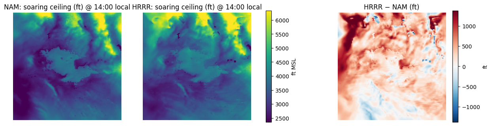
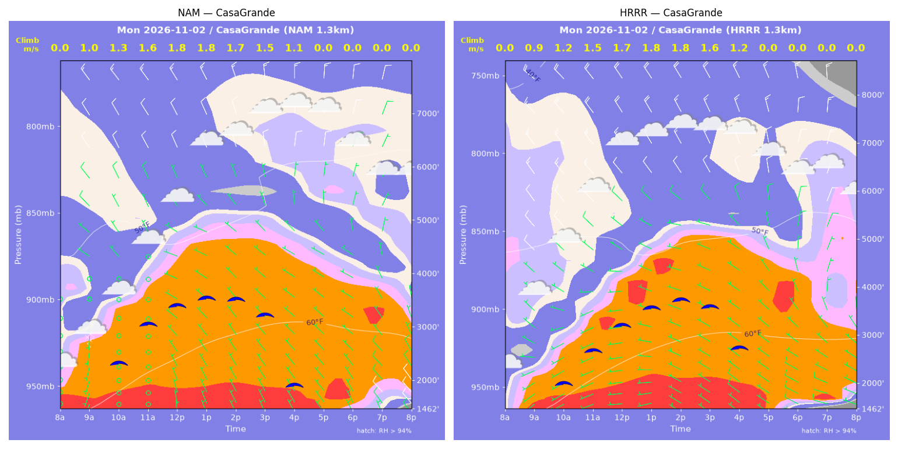
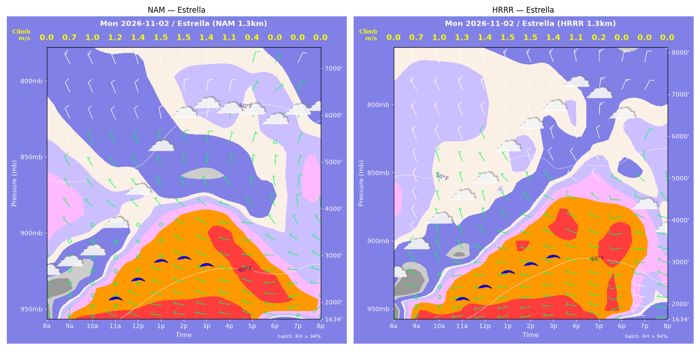
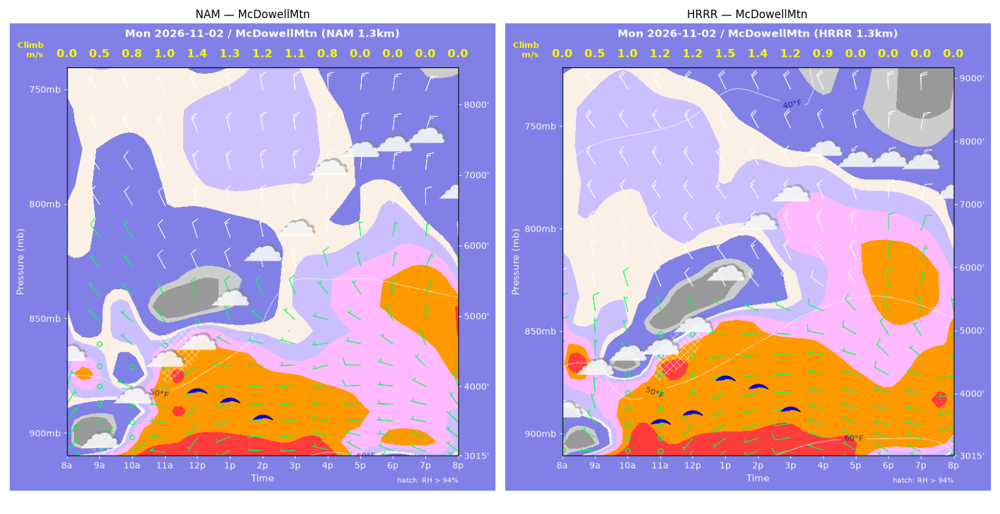
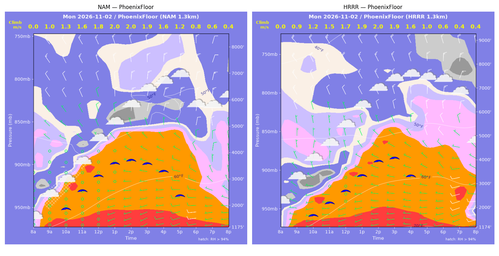
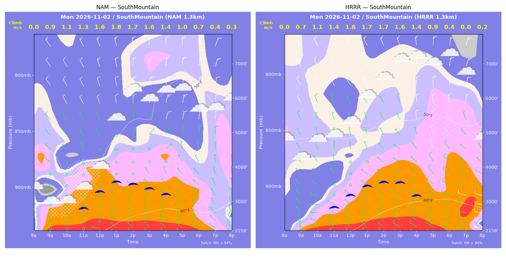
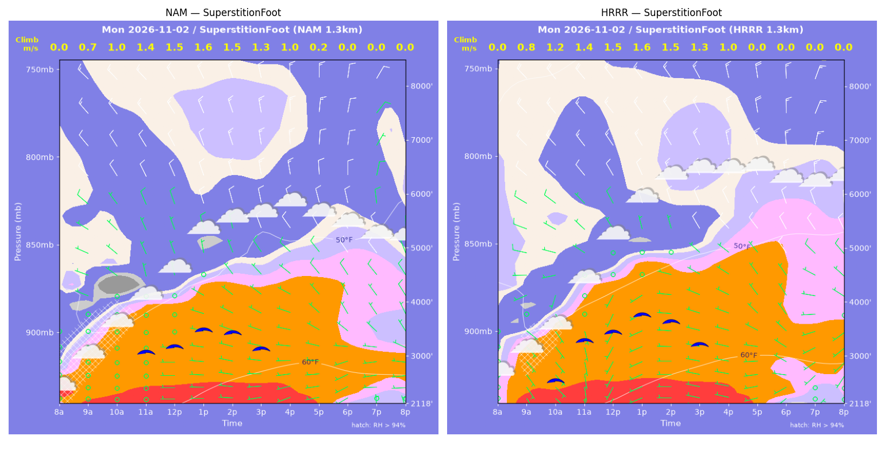
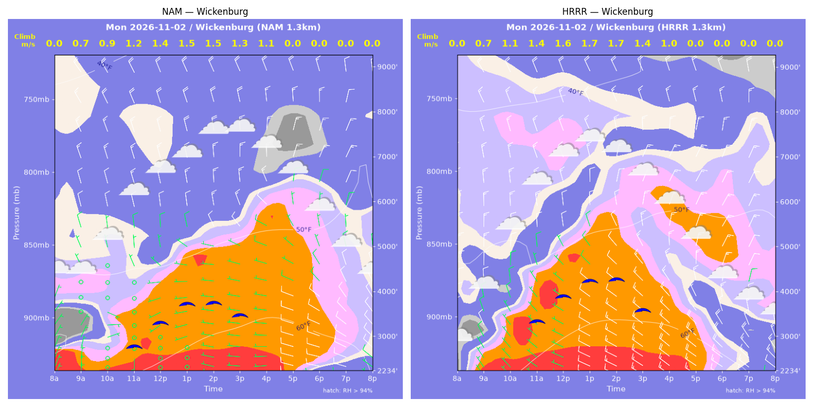

../runs/ab-phoenix-nam — model nam, cycle 2026-11-01 18z, dx 1.3333333740234374 km, 13 hours, grid 114×114../runs/ab-phoenix-hrrr — model hrrr, cycle 2026-11-01 18z, dx 1.3333333740234374 km, 13 hours, grid 114×114Grids identical; afternoon = 12:00–17:59 local (UTC-7). Δ = HRRR − NAM.
| Site | terrain ft | BL top (AGL) med|Δ| / bias (ft) | w* med|Δ| / bias (fpm) | Soaring ceiling med|Δ| / bias (ft) | BL wind speed med|Δ| / bias (kt) | BL wind dir med|Δ| / bias (deg) | 2 m temperature med|Δ| / bias (F) | Sfc LCL (AGL) med|Δ| / bias (ft) | Sensible heat flux med|Δ| / bias (W/m2) |
|---|---|---|---|---|---|---|---|---|---|
| PhoenixFloor | 1175 | 445 / -40 | 16 / -12 | 346 / -190 | 3 / +1 | 6 / -1 | 1 / +1 | 922 / +899 | 13 / -12 |
| SouthMountain | 2159 | 179 / -19 | 9 / -10 | 88 / -13 | 2 / +2 | 74 / -47 | 1 / +1 | 852 / +847 | 21 / -11 |
| SuperstitionFoot | 2118 | 405 / +320 | 5 / -5 | 150 / +137 | 1 / -0 | 8 / -11 | 1 / +1 | 702 / +706 | 16 / -13 |
| Estrella | 1634 | 328 / +198 | 7 / -4 | 42 / +19 | 2 / +2 | 23 / -12 | 1 / +1 | 487 / +592 | 6 / +4 |
| Wickenburg | 2235 | 450 / -150 | 34 / +26 | 302 / +278 | 4 / +4 | 13 / +19 | 2 / +1 | 688 / -559 | 36 / +33 |
| CasaGrande | 1463 | 372 / +317 | 11 / +6 | 211 / +199 | 2 / +2 | 32 / -22 | 0 / +0 | 498 / +497 | 3 / +1 |
| McDowellMtn | 3015 | 560 / +453 | 30 / +16 | 341 / +249 | 3 / +1 | 12 / +11 | 1 / +1 | 680 / +629 | 13 / +3 |
| Metric | n | median |Δ| | p90 |Δ| | bias |
|---|---|---|---|---|
| BL top (AGL) (ft) | 42 | 398 | 669 | +154 |
| w* (fpm) | 42 | 13 | 41 | +3 |
| Soaring ceiling (ft) | 42 | 152 | 534 | +97 |
| BL wind speed (kt) | 42 | 2 | 5 | +2 |
| BL wind dir (deg) | 42 | 14 | 63 | -9 |
| 2 m temperature (F) | 42 | 1 | 2 | +1 |
| Sfc LCL (AGL) (ft) | 42 | 716 | 1142 | +516 |
| Sensible heat flux (W/m2) | 42 | 13 | 33 | +1 |
diffmap_tol.png| local | BL top NAM/HRRR ft | w* NAM/HRRR fpm | ceiling NAM/HRRR ft | BL wind NAM/HRRR | T2 NAM/HRRR F | HFX NAM/HRRR |
|---|---|---|---|---|---|---|
| 08:00 | 0 / 0 | 0 / 0 | 1175 / 1175 | 1kt@089 / 3kt@314 | 58 / 57 | 0 / 0 |
| 09:00 | 1462 / 1173 | 196 / 172 | 1175 / 1175 | 2kt@108 / 4kt@287 | 61 / 60 | 78 / 66 |
| 10:00 | 2109 / 1639 | 249 / 244 | 1936 / 1727 | 2kt@145 / 4kt@278 | 63 / 63 | 111 / 135 |
| 11:00 | 2744 / 2133 | 308 / 296 | 2621 / 2250 | 1kt@014 / 2kt@303 | 65 / 65 | 163 / 186 |
| 12:00 | 3280 / 2693 | 363 / 338 | 3158 / 2723 | 3kt@327 / 3kt@339 | 67 / 67 | 224 / 221 |
| 13:00 | 3839 / 3522 | 394 / 377 | 3613 / 3356 | 5kt@338 / 7kt@336 | 69 / 69 | 246 / 235 |
| 14:00 | 3988 / 4338 | 395 / 397 | 3711 / 3940 | 10kt@003 / 6kt@338 | 70 / 71 | 239 / 223 |
| 15:00 | 3936 / 4615 | 368 / 384 | 3578 / 4063 | 5kt@339 / 9kt@348 | 71 / 72 | 197 / 190 |
| 16:00 | 3831 / 4005 | 322 / 313 | 3289 / 3325 | 5kt@351 / 9kt@355 | 71 / 72 | 136 / 119 |
| 17:00 | 3638 / 3097 | 242 / 205 | 2374 / 1175 | 6kt@323 / 7kt@320 | 71 / 72 | 61 / 43 |
| 18:00 | 1825 / 1481 | 161 / 109 | 1175 / 1175 | 8kt@291 / 6kt@275 | 69 / 71 | 36 / 14 |
| 19:00 | 1357 / 2137 | 121 / 79 | 1175 / 1175 | 6kt@290 / 10kt@257 | 69 / 70 | 20 / 4 |
| 20:00 | 895 / 547 | 80 / 77 | 1175 / 1175 | 7kt@273 / 13kt@258 | 68 / 67 | 9 / 13 |
| local | BL top NAM/HRRR ft | w* NAM/HRRR fpm | ceiling NAM/HRRR ft | BL wind NAM/HRRR | T2 NAM/HRRR F | HFX NAM/HRRR |
|---|---|---|---|---|---|---|
| 08:00 | 0 / 0 | 0 / 0 | 2159 / 2158 | 1kt@230 / 5kt@312 | 58 / 56 | 0 / 0 |
| 09:00 | 1156 / 641 | 186 / 134 | 2159 / 2158 | 0kt@069 / 4kt@314 | 58 / 57 | 85 / 56 |
| 10:00 | 1756 / 1160 | 213 / 214 | 2159 / 2158 | 1kt@127 / 4kt@272 | 58 / 59 | 83 / 128 |
| 11:00 | 2071 / 1627 | 249 / 278 | 2908 / 2910 | 1kt@102 / 2kt@336 | 60 / 60 | 113 / 200 |
| 12:00 | 2264 / 2011 | 313 / 317 | 3373 / 3249 | 1kt@319 / 2kt@027 | 61 / 62 | 206 / 241 |
| 13:00 | 2503 / 2346 | 352 / 339 | 3641 / 3508 | 0kt@034 / 3kt@345 | 63 / 64 | 267 / 253 |
| 14:00 | 2411 / 2520 | 343 / 340 | 3559 / 3611 | 2kt@074 / 4kt@321 | 64 / 65 | 256 / 239 |
| 15:00 | 2327 / 2614 | 319 / 322 | 3429 / 3599 | 3kt@061 / 5kt@321 | 65 / 66 | 214 / 196 |
| 16:00 | 2317 / 2415 | 283 / 270 | 3260 / 3218 | 3kt@044 / 6kt@324 | 65 / 66 | 150 / 125 |
| 17:00 | 1815 / 1615 | 204 / 170 | 2159 / 2158 | 4kt@334 / 8kt@322 | 65 / 66 | 72 / 46 |
| 18:00 | 1136 / 940 | 140 / 78 | 2159 / 2158 | 6kt@301 / 7kt@287 | 64 / 65 | 37 / 8 |
| 19:00 | 476 / 1576 | 87 / 0 | 2159 / 2158 | 6kt@307 / 8kt@289 | 63 / 65 | 21 / -0 |
| 20:00 | 246 / 194 | 53 / 32 | 2159 / 2158 | 7kt@311 / 13kt@270 | 63 / 63 | 9 / 3 |
| local | BL top NAM/HRRR ft | w* NAM/HRRR fpm | ceiling NAM/HRRR ft | BL wind NAM/HRRR | T2 NAM/HRRR F | HFX NAM/HRRR |
|---|---|---|---|---|---|---|
| 08:00 | 0 / 0 | 0 / 0 | 2118 / 2118 | 1kt@124 / 2kt@186 | 56 / 55 | 0 / 0 |
| 09:00 | 1412 / 1435 | 142 / 167 | 2118 / 2118 | 2kt@143 / 3kt@135 | 57 / 58 | 30 / 47 |
| 10:00 | 1828 / 1801 | 192 / 234 | 2118 / 2607 | 1kt@282 / 3kt@211 | 58 / 59 | 57 / 103 |
| 11:00 | 2230 / 2554 | 277 / 285 | 3142 / 3344 | 4kt@343 / 4kt@305 | 60 / 61 | 141 / 132 |
| 12:00 | 2244 / 2671 | 293 / 300 | 3237 / 3488 | 3kt@353 / 2kt@315 | 62 / 62 | 167 / 148 |
| 13:00 | 2650 / 3097 | 309 / 315 | 3520 / 3791 | 6kt@351 / 5kt@344 | 63 / 64 | 165 / 148 |
| 14:00 | 2663 / 3049 | 296 / 299 | 3461 / 3673 | 6kt@340 / 8kt@343 | 64 / 65 | 144 / 127 |
| 15:00 | 2538 / 2831 | 261 / 258 | 3160 / 3248 | 7kt@327 / 7kt@312 | 65 / 65 | 103 / 87 |
| 16:00 | 2513 / 2938 | 202 / 201 | 2118 / 2118 | 7kt@306 / 7kt@308 | 65 / 66 | 48 / 39 |
| 17:00 | 744 / 687 | 43 / 0 | 2118 / 2118 | 5kt@277 / 3kt@267 | 64 / 65 | 1 / -1 |
| 18:00 | 520 / 346 | 0 / 0 | 2118 / 2118 | 4kt@249 / 3kt@253 | 62 / 62 | -1 / -1 |
| 19:00 | 83 / 83 | 0 / 0 | 2118 / 2118 | 3kt@353 / 2kt@038 | 61 / 61 | -1 / -1 |
| 20:00 | 83 / 83 | 0 / 0 | 2118 / 2118 | 3kt@339 / 3kt@039 | 60 / 61 | -1 / -1 |
| local | BL top NAM/HRRR ft | w* NAM/HRRR fpm | ceiling NAM/HRRR ft | BL wind NAM/HRRR | T2 NAM/HRRR F | HFX NAM/HRRR |
|---|---|---|---|---|---|---|
| 08:00 | 0 / 0 | 0 / 0 | 1634 / 1634 | 1kt@246 / 5kt@178 | 54 / 55 | 0 / 0 |
| 09:00 | 669 / 789 | 137 / 137 | 1634 / 1634 | 2kt@158 / 4kt@283 | 58 / 58 | 57 / 49 |
| 10:00 | 1058 / 1219 | 192 / 201 | 1634 / 1634 | 2kt@115 / 4kt@338 | 59 / 60 | 98 / 100 |
| 11:00 | 1584 / 1585 | 245 / 247 | 2175 / 2196 | 1kt@128 / 4kt@336 | 62 / 62 | 137 / 142 |
| 12:00 | 2019 / 1866 | 277 / 275 | 2562 / 2480 | 1kt@349 / 3kt@336 | 63 / 64 | 156 / 166 |
| 13:00 | 2552 / 2334 | 300 / 296 | 2942 / 2810 | 4kt@334 / 3kt@312 | 65 / 66 | 157 / 166 |
| 14:00 | 2712 / 2678 | 294 / 297 | 2991 / 2991 | 4kt@353 / 6kt@313 | 66 / 67 | 139 / 147 |
| 15:00 | 2775 / 3212 | 268 / 283 | 2835 / 3161 | 4kt@352 / 9kt@313 | 67 / 68 | 102 / 106 |
| 16:00 | 2519 / 3189 | 208 / 218 | 1634 / 1634 | 3kt@288 / 9kt@310 | 67 / 69 | 52 / 48 |
| 17:00 | 1780 / 2265 | 86 / 43 | 1634 / 1634 | 4kt@274 / 5kt@297 | 66 / 68 | 4 / -0 |
| 18:00 | 316 / 1058 | 0 / 0 | 1634 / 1634 | 4kt@272 / 9kt@258 | 64 / 65 | -1 / -2 |
| 19:00 | 83 / 714 | 0 / 0 | 1634 / 1634 | 1kt@143 / 9kt@281 | 63 / 62 | -0 / -1 |
| 20:00 | 83 / 427 | 0 / 0 | 1634 / 1634 | 2kt@138 / 7kt@265 | 62 / 61 | -1 / -0 |
| local | BL top NAM/HRRR ft | w* NAM/HRRR fpm | ceiling NAM/HRRR ft | BL wind NAM/HRRR | T2 NAM/HRRR F | HFX NAM/HRRR |
|---|---|---|---|---|---|---|
| 08:00 | 0 / 0 | 0 / 0 | 2235 / 2235 | 5kt@024 / 6kt@320 | 49 / 52 | 0 / 0 |
| 09:00 | 876 / 878 | 132 / 147 | 2235 / 2235 | 4kt@027 / 8kt@332 | 56 / 57 | 37 / 52 |
| 10:00 | 990 / 1609 | 171 / 214 | 2235 / 2235 | 3kt@080 / 8kt@338 | 59 / 61 | 72 / 90 |
| 11:00 | 1903 / 2526 | 242 / 276 | 2860 / 3386 | 2kt@281 / 9kt@354 | 61 / 64 | 107 / 122 |
| 12:00 | 2451 / 3099 | 277 / 318 | 3359 / 3921 | 3kt@313 / 9kt@349 | 63 / 66 | 124 / 153 |
| 13:00 | 3038 / 3511 | 296 / 340 | 3769 / 4262 | 9kt@346 / 9kt@356 | 65 / 68 | 123 / 167 |
| 14:00 | 3180 / 3589 | 288 / 336 | 3782 / 4285 | 9kt@335 / 10kt@347 | 66 / 68 | 107 / 156 |
| 15:00 | 3176 / 2865 | 258 / 285 | 3501 / 3611 | 10kt@321 / 14kt@331 | 67 / 68 | 76 / 120 |
| 16:00 | 3800 / 2104 | 207 / 205 | 2235 / 2235 | 10kt@311 / 17kt@325 | 67 / 67 | 31 / 60 |
| 17:00 | 2236 / 1810 | 0 / 0 | 2235 / 2235 | 7kt@300 / 17kt@333 | 66 / 64 | -8 / -3 |
| 18:00 | 1112 / 1203 | 0 / 0 | 2235 / 2235 | 10kt@294 / 15kt@341 | 62 / 61 | -8 / -13 |
| 19:00 | 751 / 987 | 0 / 0 | 2235 / 2235 | 11kt@301 / 16kt@338 | 60 / 60 | -5 / -13 |
| 20:00 | 510 / 700 | 0 / 0 | 2235 / 2235 | 9kt@313 / 13kt@338 | 58 / 58 | -2 / -6 |
| local | BL top NAM/HRRR ft | w* NAM/HRRR fpm | ceiling NAM/HRRR ft | BL wind NAM/HRRR | T2 NAM/HRRR F | HFX NAM/HRRR |
|---|---|---|---|---|---|---|
| 08:00 | 0 / 0 | 0 / 0 | 1463 / 1463 | 1kt@217 / 2kt@208 | 59 / 58 | 0 / 0 |
| 09:00 | 1605 / 1178 | 197 / 170 | 1463 / 1463 | 3kt@181 / 4kt@274 | 62 / 61 | 71 / 62 |
| 10:00 | 2229 / 1778 | 262 / 243 | 2389 / 2052 | 2kt@295 / 3kt@253 | 64 / 63 | 121 / 120 |
| 11:00 | 3001 / 2456 | 320 / 299 | 3107 / 2718 | 5kt@333 / 3kt@267 | 65 / 65 | 163 / 164 |
| 12:00 | 3358 / 3078 | 349 / 337 | 3441 / 3228 | 3kt@314 / 6kt@302 | 67 / 67 | 190 / 188 |
| 13:00 | 3534 / 3583 | 354 / 354 | 3566 / 3591 | 4kt@324 / 7kt@295 | 68 / 68 | 189 / 186 |
| 14:00 | 3591 / 3865 | 339 / 350 | 3533 / 3741 | 4kt@331 / 7kt@280 | 69 / 69 | 163 / 167 |
| 15:00 | 3458 / 3922 | 300 / 317 | 3234 / 3593 | 4kt@350 / 7kt@285 | 70 / 70 | 116 / 122 |
| 16:00 | 3030 / 3763 | 225 / 245 | 1936 / 2748 | 4kt@326 / 6kt@320 | 70 / 70 | 55 / 58 |
| 17:00 | 2483 / 3146 | 0 / 0 | 1463 / 1463 | 5kt@304 / 6kt@338 | 69 / 68 | -2 / -2 |
| 18:00 | 1257 / 791 | 0 / 0 | 1463 / 1463 | 6kt@310 / 8kt@300 | 66 / 65 | -2 / -4 |
| 19:00 | 778 / 558 | 0 / 0 | 1463 / 1463 | 8kt@316 / 8kt@293 | 64 / 63 | -3 / -4 |
| 20:00 | 535 / 83 | 0 / 0 | 1463 / 1463 | 9kt@324 / 5kt@280 | 63 / 61 | -8 / -2 |
| local | BL top NAM/HRRR ft | w* NAM/HRRR fpm | ceiling NAM/HRRR ft | BL wind NAM/HRRR | T2 NAM/HRRR F | HFX NAM/HRRR |
|---|---|---|---|---|---|---|
| 08:00 | 0 / 0 | 0 / 0 | 3015 / 3016 | 3kt@046 / 2kt@236 | 54 / 52 | 0 / 0 |
| 09:00 | 349 / 392 | 108 / 104 | 3015 / 3016 | 3kt@058 / 3kt@304 | 52 / 55 | 51 / 40 |
| 10:00 | 829 / 1543 | 166 / 203 | 3015 / 3016 | 2kt@287 / 4kt@331 | 54 / 56 | 78 / 78 |
| 11:00 | 1807 / 1888 | 189 / 242 | 3015 / 3628 | 4kt@314 / 2kt@328 | 56 / 57 | 53 / 108 |
| 12:00 | 2251 / 2224 | 272 / 243 | 4019 / 3756 | 8kt@334 / 4kt@340 | 58 / 58 | 127 / 93 |
| 13:00 | 2067 / 2570 | 262 / 293 | 3875 / 4294 | 5kt@330 / 10kt@330 | 59 / 60 | 123 / 141 |
| 14:00 | 1867 / 2517 | 243 / 277 | 3633 / 4170 | 7kt@314 / 10kt@326 | 60 / 61 | 107 / 121 |
| 15:00 | 1663 / 2396 | 207 / 243 | 3015 / 3815 | 6kt@288 / 9kt@300 | 61 / 62 | 73 / 86 |
| 16:00 | 1448 / 2064 | 150 / 175 | 3015 / 3016 | 7kt@257 / 8kt@281 | 62 / 63 | 30 / 36 |
| 17:00 | 930 / 1173 | 0 / 0 | 3015 / 3016 | 8kt@268 / 7kt@281 | 60 / 62 | -4 / -3 |
| 18:00 | 758 / 1000 | 0 / 0 | 3015 / 3016 | 8kt@274 / 7kt@295 | 59 / 60 | -6 / -3 |
| 19:00 | 700 / 370 | 0 / 0 | 3015 / 3016 | 6kt@288 / 4kt@296 | 58 / 59 | -3 / -1 |
| 20:00 | 491 / 82 | 0 / 0 | 3015 / 3016 | 6kt@317 / 1kt@085 | 57 / 58 | -5 / -0 |
montage_PhoenixFloor.pngmontage_SouthMountain.pngmontage_SuperstitionFoot.pngmontage_Estrella.pngmontage_Wickenburg.pngmontage_CasaGrande.pngmontage_McDowellMtn.png